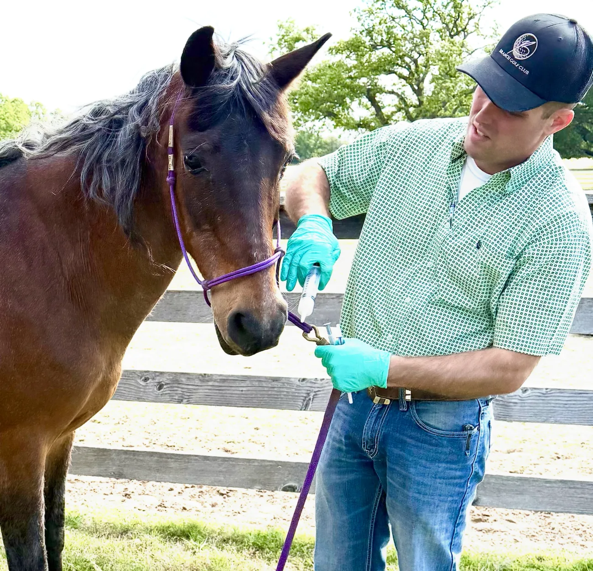

If the horse world is new to you, welcome. Here’s everything you need to understand what we do, and why it matters so much, in plain language.
It’s easy to mix these up, so here’s the difference in one breath:
A riding barn keeps horses to be ridden and worked.
A rescue takes horses in, rehabilitates them, and rehomes them to new owners.
A sanctuary, like us, is different: it’s a permanent home. The animals who arrive here are not for sale, not for adoption, and not going anywhere. They stay, cared for, for the rest of their natural lives.

Here’s a fact that surprises most people: a horse can live 25 to 30 years or more. But their working or riding years often end far earlier, after an injury, or simply age.
That gap is where the heartbreak happens. Horses who can no longer be ridden are frequently sold, passed from home to home, or sent to auction, where some are just days from slaughter. They didn’t do anything wrong. They just grew old, or got hurt.
Those are exactly the horses we take: the seniors, the injured, the ones who have “outlived their usefulness” in everyone’s eyes but ours. They’ve earned their retirement. We make sure they get it.
a horse’s natural lifespan
horses & donkeys safe here today
of them, here for life
of them we’ll ever give up on
More than most people expect, and it never pauses. Here’s roughly where a gift goes. (Figures are friendly estimates to show scale, real costs vary by animal.)
Good forage is the foundation of a horse’s health, every single day.
Hoof care every 6–8 weeks keeps a horse sound and pain-free.
Older horses need their teeth floated so they can chew and stay nourished.
Hay, farrier, vet, dental, and the unexpected, all adds up, for life.
You’ll see these words on our residents’ pages. Now they’ll all make sense.
A male horse that’s been neutered, usually calm and easygoing.
An adult female horse.
A coat with white hairs mixed evenly through, giving a frosted look.
A reddish-brown coat color, very common in Quarter Horses.
America’s most popular breed, gentle, and quick over short distances.
A free-roaming horse of the American West, managed by the federal BLM.
The specialist who trims hooves and fits shoes.
A tendon down the back of the leg; a tear is painful and slow to heal.
A horse, like a Tennessee Walker, with a naturally smooth, gliding step.